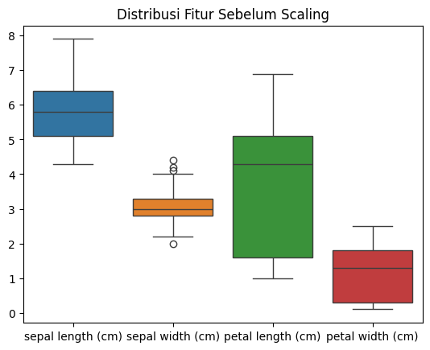
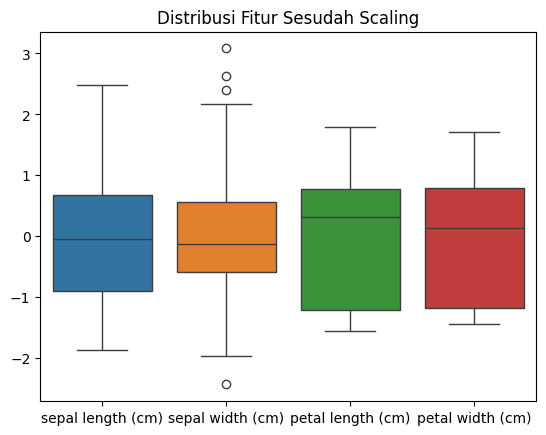

DATA PREPARATION#
Studi Kasus: Iris Flower Dataset#
Pendahuluan#
Data preparation merupakan tahap penting dalam proses data mining dan machine learning. Tahap ini bertujuan untuk menyiapkan data agar siap digunakan dalam proses analisis dan pemodelan. Proses ini meliputi pembersihan data, transformasi data, serta pemilihan fitur yang relevan.
Pada studi kasus ini digunakan Iris Flower Dataset, yaitu dataset klasik yang sering digunakan dalam pembelajaran machine learning. Dataset ini berisi informasi mengenai ukuran bunga iris, seperti panjang dan lebar sepal serta petal, yang digunakan untuk mengklasifikasikan bunga ke dalam tiga spesies yaitu Iris-setosa, Iris-versicolor, dan Iris-virginica.
3.1 Konsep Data Preparation dalam CRISP-DM#
CRISP-DM (Cross Industry Standard Process for Data Mining) merupakan metodologi yang umum digunakan dalam proses data mining. Salah satu tahap penting dalam CRISP-DM adalah Data Preparation.
Tahap ini mencakup beberapa aktivitas utama, yaitu:
Data Cleaning: membersihkan data dari nilai yang hilang atau duplikasi
Data Transformation: mengubah data ke format yang sesuai
Feature Selection: memilih fitur yang relevan untuk model
Data Integration: menggabungkan data dari berbagai sumber
Tujuan utama tahap ini adalah memastikan data memiliki kualitas yang baik sebelum digunakan untuk proses pemodelan.
Persiapan Lingkungan Analisis#
Sebelum melakukan analisis data, kita perlu menyiapkan lingkungan kerja dengan mengimpor library yang dibutuhkan.
3.2 Import Library#
Beberapa library Python yang digunakan dalam analisis ini antara lain:
pandas untuk manipulasi data
numpy untuk operasi numerik
matplotlib dan seaborn untuk visualisasi data
scikit-learn untuk dataset dan preprocessing
Contoh kode:
import pandas as pd
import numpy as np
import matplotlib.pyplot as plt
import seaborn as sns
Membaca Dataset#
Dataset perlu dimuat ke dalam lingkungan analisis sebelum dapat diproses.
3.3 Memuat Dataset Awal#
Dataset Iris dapat dimuat menggunakan library scikit-learn atau dari file CSV.
Contoh menggunakan scikit-learn
from sklearn.datasets import load_iris
iris = load_iris()
df = pd.DataFrame(iris.data, columns=iris.feature_names)
df['species'] = iris.target
df.head()
---------------------------------------------------------------------------
NameError Traceback (most recent call last)
Cell In[1], line 4
1 from sklearn.datasets import load_iris
3 iris = load_iris()
----> 4 df = pd.DataFrame(iris.data, columns=iris.feature_names)
5 df['species'] = iris.target
6 df.head()
NameError: name 'pd' is not defined
Dataset ini memiliki beberapa fitur utama:
sepal length
sepal width
petal length
petal width
species (target)
Pembersihan Data#
Tahap pembersihan data bertujuan untuk memastikan data tidak memiliki masalah yang dapat mempengaruhi hasil analisis.
3.4 Pemeriksaan Duplikasi#
Data duplikat dapat menyebabkan bias dalam model. Oleh karena itu perlu dilakukan pengecekan duplikasi.
df.duplicated().sum()
Jika terdapat data duplikat, data tersebut dapat dihapus dengan:
df = df.drop_duplicates()
df.duplicated().sum()
df = df.drop_duplicates()
3.5 Pemeriksaan Missing Value#
Missing value merupakan nilai yang tidak tersedia dalam dataset.
df.isnull().sum()
sepal length (cm) 0
sepal width (cm) 0
petal length (cm) 0
petal width (cm) 0
species 0
dtype: int64
Jika terdapat missing value, beberapa metode penanganannya antara lain:
menghapus baris yang memiliki missing value
mengganti dengan nilai rata-rata
menggunakan metode imputasi
Pada dataset Iris biasanya tidak terdapat missing value.
Transformasi Data#
Transformasi data dilakukan untuk mengubah data agar lebih sesuai digunakan oleh algoritma machine learning.
3.6 Encoding Label#
Karena model machine learning membutuhkan data numerik, maka label kategori perlu diubah menjadi angka.
from sklearn.preprocessing import LabelEncoder
le = LabelEncoder()
df['species'] = le.fit_transform(df['species'])
Seleksi Fitur#
Feature selection bertujuan untuk memilih fitur yang paling relevan untuk model.
3.7 Pemisahan Fitur dan Target#
Dataset dipisahkan menjadi fitur (X) dan target (y).
X = df.drop('species', axis=1)
y = df['species']
Standarisasi Fitur#
Standarisasi dilakukan agar semua fitur memiliki skala yang sama sehingga model dapat bekerja lebih optimal.
3.8 Alasan Dilakukan Scaling#
Beberapa algoritma machine learning sangat sensitif terhadap skala data, seperti:
KNN
SVM
Logistic Regression
Neural Network
Scaling membantu:
mempercepat proses pelatihan model
meningkatkan akurasi model
menghindari dominasi fitur dengan nilai besar
Visualisasi Sebelum dan Sesudah Scaling#
Visualisasi membantu memahami distribusi data sebelum dan sesudah dilakukan transformasi.
3.9 Sebelum Scaling#
sns.boxplot(data=X)
plt.title("Distribusi Fitur Sebelum Scaling")
plt.show()

Visualisasi ini menunjukkan bahwa setiap fitur memiliki skala yang berbeda.
3.10 Sesudah Scaling#
from sklearn.preprocessing import StandardScaler
scaler = StandardScaler()
X_scaled = scaler.fit_transform(X)
sns.boxplot(data=pd.DataFrame(X_scaled, columns=X.columns))
plt.title("Distribusi Fitur Sesudah Scaling")
plt.show()

Setelah dilakukan scaling, distribusi data menjadi lebih seragam sehingga dapat meningkatkan performa model machine learning.
Dengan melalui tahapan data preparation, dataset telah siap digunakan pada tahap berikutnya yaitu modeling atau pembuatan model machine learning.
Menyimpan Dataset Hasil Preprocessing untuk Tahap Pemodelan#
Setelah seluruh proses data preparation selesai dilakukan, langkah berikutnya adalah menyimpan dataset yang telah diproses. Dataset ini nantinya akan digunakan pada tahap modeling atau pembuatan model machine learning.
Pada tahap ini, fitur yang telah melalui proses standarisasi (scaling) digabungkan kembali dengan variabel target sehingga menghasilkan dataset akhir yang siap digunakan dalam proses analisis lebih lanjut.
Dataset yang telah diproses kemudian disimpan dalam format CSV agar mudah digunakan kembali pada tahap pemodelan maupun analisis lanjutan.
Berikut contoh kode untuk membuat dataset akhir dan menyimpannya ke dalam file CSV.
df_final = pd.DataFrame(X_scaled, columns=X.columns)
df_final["class_label"] = y
df_final.to_csv("iris_preprocessed_dataset.csv", index=False)
df_final.head()
| sepal length (cm) | sepal width (cm) | petal length (cm) | petal width (cm) | class_label | |
|---|---|---|---|---|---|
| 0 | -0.898033 | 1.012401 | -1.333255 | -1.308624 | 0.0 |
| 1 | -1.139562 | -0.137353 | -1.333255 | -1.308624 | 0.0 |
| 2 | -1.381091 | 0.322549 | -1.390014 | -1.308624 | 0.0 |
| 3 | -1.501855 | 0.092598 | -1.276496 | -1.308624 | 0.0 |
| 4 | -1.018798 | 1.242352 | -1.333255 | -1.308624 | 0.0 |
Dengan demikian dataset telah siap digunakan untuk tahap berikutnya yaitu model development atau pembangunan model machine learning.